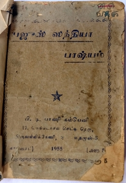

|  | Sandhyaavandanam is a daily prayer ritual performed in preparation for conducting subsequent Vedic rituals. The Sandhyaavandanam is performed three times in the day: just before sunrise, at high noon, just after sunset. It is considered a salutation at the Sandhyaa time to the Goddess Sandhyaa that presides during Sandhyaa, personified in various forms. Depending on which Veda is followed (Rig, Yajur, Sama, Atharva), the ritual differs in the mantram recitation and the procedures. Furthermore, additional differences arise depending on the various communities, families and individuals that perform the Sandhyaavandanam. As a result the Sandhyaavandanam is a very diverse ritual, and will perhaps continue to evolve in scope and specific details of performance in the future. My family follows the Yajurveda, and the following article documents the procedure taught to me by my grandfather M Viswanathan, and passed on to me by my father MV Subramanian. Much of the ritual we perform is also found in the book Yajussandhyaa Bhashyam by P.T. Paani Company, Thiruvallikkeni, Madras (1955) (image shown to the left). Please note that rituals may differ for the reader, and the document is to be used at the reader's discretion. Only the morning (Kaalai) Sandhyaavandanam is specified. The mantram is simultaneously written in Sanskrit (original Vedic text), Tamil (my native language) and English (most commonly used). |
The document is available here: Yajurveda_Kaalai_Sandhyaavandanam.pdf
The text will be available in this section soon. Meanwhile, please use the pdf file linked above.
The primary source for this article is the book Yajussandhyaa Bhashyam by P.T. Paani Company, Thiruvallikkeni, Madras (1955). The image of this primary source is shown above. The following are other sources.